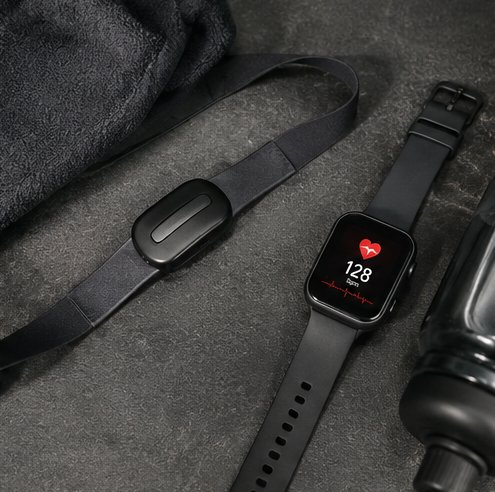
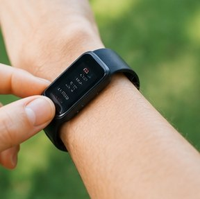
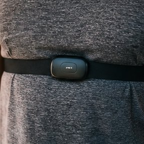
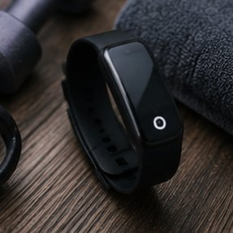
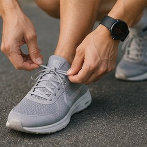
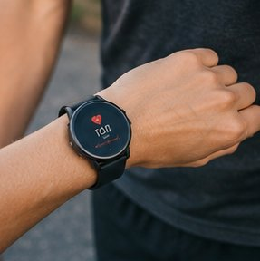
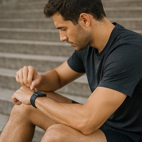
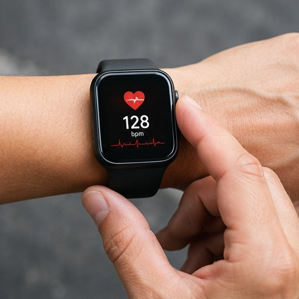

心拍ゾーン計算ツール
カルボーネン法・医学的根拠付き
※ デフォルト：220 − 年齢で自動計算
ウェアラブルデバイスとの連携
計算したゾーン値をApple Watch・Garminなどに設定して、リアルタイム心拍確認しながらトレーニングが可能です。

リアルタイム心拍モニタリング
計算した目標ゾーンをデバイスに設定すると、運動中にリアルタイムで目標ゾーン内かどうかを確認しながらトレーニングできます。
🏃 こんなシーンで活用
ランニング
Z2〜Z3ゾーンで持久力アップ
サイクリング
長距離はZ2、インターバルはZ4
ジムトレ
Z1ウォームアップからスタート
スイミング
脂肪燃焼に理想的な全身運動

HIIT
Z4〜Z5の高強度インターバル
ウォーキング
Z1〜Z2の軽強度で脂肪燃焼



🔗 関連ツール
❓ よくある質問
📖 使い方
- 年齢（歳）を入力する
- 朝測定した安静時心拍数（bpm）を入力する
- 「計算する」ボタンを押す
- Z1〜Z5のゾーンと推奨心拍数を確認する
- 目的に合ったゾーンでトレーニングする
🎯 目的別ゾーン活用例
ダイエット・脂肪燃焼が目的の方
Z2ゾーン（最大心拍数の60〜70%）を維持しながら、ウォーキング・ジョギング・サイクリングを30〜60分行います。週3〜5回継続することで体脂肪の分解が促進されます。始めはZ1に近い強度でも構いません。まず習慣化することが最優先です。
持久力・体力向上が目的の方
週の80%はZ2、残り20%をZ3〜Z4で行う「80/20トレーニング」が効果的です。例えば週5日トレーニングするなら4日をZ2の長距離、1日だけZ4のインターバルトレーニング（例：1km×5本）にします。この比率がVO2maxと乳酸閾値を効率的に向上させます。
時間が限られている方（HIIT）
Z4〜Z5の高強度インターバルトレーニング（HIIT）は20分以内でも高い運動効果が得られます。「20秒全力→10秒休憩」を8回繰り返す「タバタ式」や、「1分高強度→2分回復」を6〜8セット行う方法が代表的です。ただし週2〜3回以上は疲労蓄積のリスクがあるため注意してください。
💡 ゾーン別トレーニングのポイント
Z1（回復ゾーン）: 激しいトレーニングの翌日や疲労が蓄積しているときに行う軽い有酸素運動です。乳酸を分解し筋肉の回復を促します。10〜20分のウォーキングが典型的です。
Z2（脂肪燃焼ゾーン）: トレーニングの中核となるゾーンです。「鼻呼吸ができて、長時間話せる」程度の強度が目安。毎日でも取り組める強度で、マラソン選手はZ2の長距離走を週の大半に充てています。初心者はこのゾーンから始めるのが最適です。
Z3（有酸素ゾーン）: 少し追い込んだ強度で、心肺機能の向上に効果的です。会話が少し難しくなる強度。テンポ走・LSD（長距離ゆっくり走）がこのゾーンに該当します。週に1〜2回が目安です。
Z4（乳酸閾値ゾーン）: 乳酸が急速に蓄積し始めるゾーンです。インターバルトレーニングやテンポ走の高強度部分がここに当たります。スピードと持久力の大幅な向上が期待できますが、疲労も大きいため週1〜2回・短時間にとどめます。
Z5（最大強度ゾーン）: 全力に近い短時間スプリントです。最大酸素摂取量（VO2max）の向上が主な目的。30秒〜2分程度しか続けられません。スポーツパフォーマンスの向上を目指す方向けで、一般的なフィットネス目的には毎週取り入れる必要はありません。
⚠️ ご利用時の注意
- 本ツールの結果は参考情報です。運動強度は個人の体調に合わせて調整してください
- 心臓疾患・高血圧などがある方は、必ず医師の指示に従って運動してください
📸 活用シーンギャラリー



🏃 心拍ゾーントレーニングの基礎知識
心拍ゾーントレーニングは、運動強度を5段階に分けて管理するスポーツ科学の手法です。1980〜90年代にエリートアスリートのコーチングから発展し、現在では一般のフィットネス愛好者にも広く普及しています。ゾーンを意識した運動は「頑張りすぎ」「緩すぎ」を防ぎ、目的に合った効率的なトレーニングを可能にします。
| ゾーン | 強度（最大心拍数比） | 主な効果 |
|---|---|---|
| Z1 | 50〜60% | 回復・ウォームアップ。非常に楽な強度。 |
| Z2 | 60〜70% | 脂肪燃焼・有酸素基礎能力の向上。会話できるペース。 |
| Z3 | 70〜80% | 有酸素能力・心肺機能の強化。やや苦しい強度。 |
| Z4 | 80〜90% | 乳酸閾値向上・スピード強化。かなり苦しい。 |
| Z5 | 90〜100% | 最大酸素摂取量（VO2max）向上。短時間のみ持続可能。 |
初心者はZ1〜Z2から始めて4〜6週間で基礎を作り、慣れてきたらZ3以上を少しずつ取り入れるのが定石です。週のトレーニング全体の80%をZ1〜Z2（低強度）、20%をZ3〜Z5（中〜高強度）にする「80/20ルール」は、持久系スポーツのコーチングで実証されているアプローチです。
ℹ️ このツールについて
「心拍ゾーン計算ツール」はAppADayCreatorが提供する無料Webツールです。1940年代にフィンランドのスポーツ生理学者カルボーネン博士が開発した「カルボーネン法」を採用しており、単純な最大心拍数の割合ではなく安静時心拍数（個人の心臓基礎機能を反映）を加味することで、より精度の高いゾーン設定を実現します。
年齢から自動推定する最大心拍数（220−年齢）に加え、実測値の手動入力にも対応。Garmin・Apple Watch・Polar等のウェアラブルデバイスに設定すれば、リアルタイムでゾーンを確認しながらトレーニングができます。
入力データはブラウザ内のみで処理され、外部サーバーに送信されません。登録・アプリインストール不要で、スマートフォン・PCどちらでも快適にご利用いただけます。